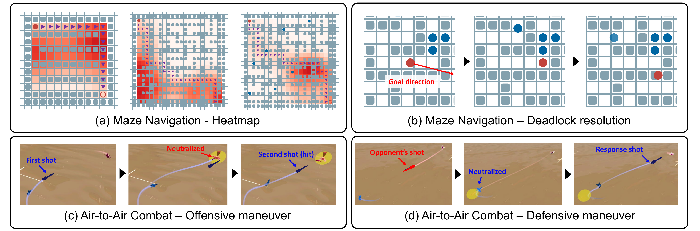
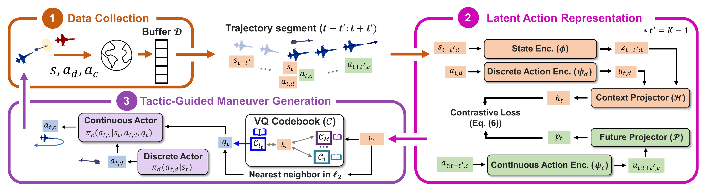
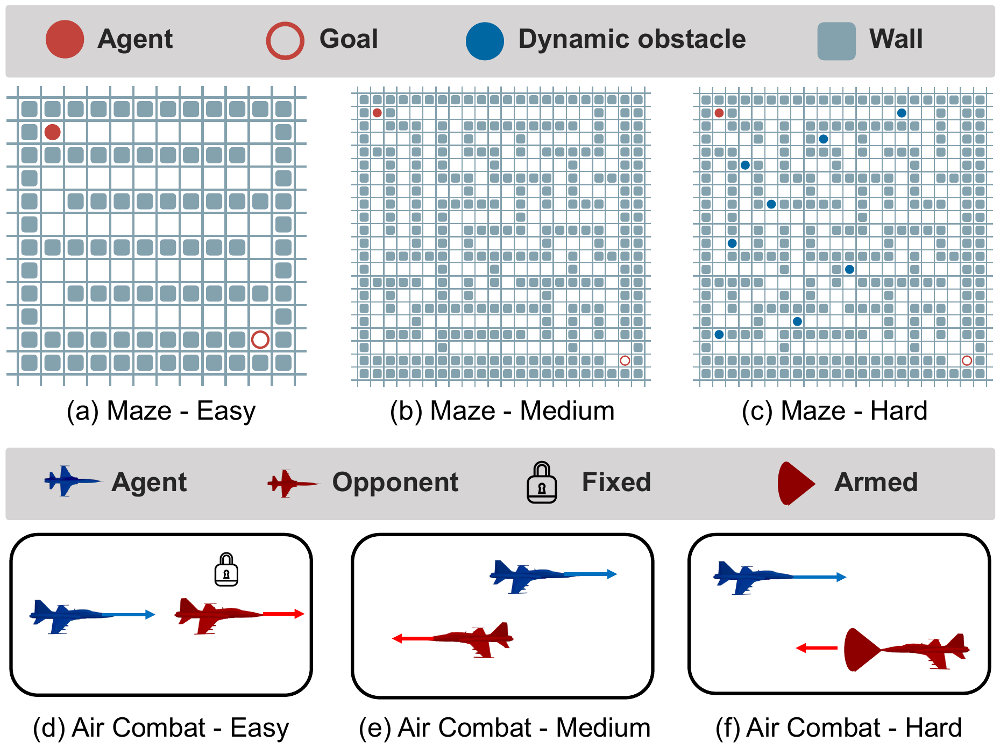
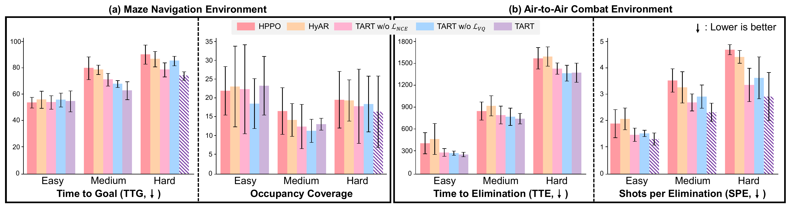
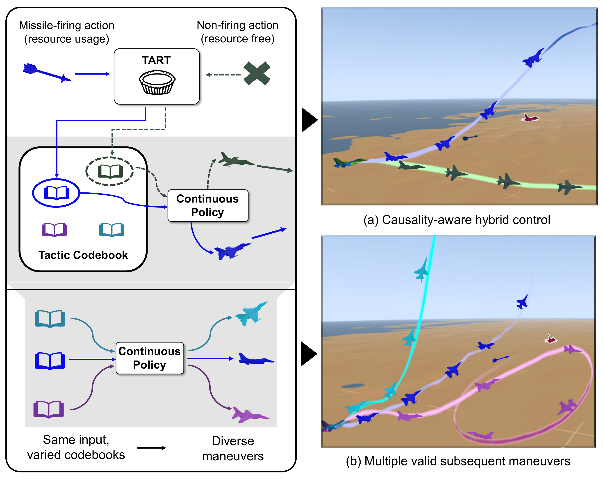

TART achieves an average success rate of 87.2%, compared with 77.4% for the strongest baseline (HyAR), with gains of +2.7 to +13.2 percentage points across all six evaluation scenarios.

TART maximizes a mutual information objective via trajectory-level contrastive learning, quantizes context embeddings into a tactical codebook, and conditions a hybrid policy to produce multi-modal maneuver distributions.

Autonomous robotic systems must coordinate discrete resource usage with continuous maneuvers under limited budgets, especially in fast-evolving tactical scenarios. Prior hybrid-action RL methods often neglect two critical properties: causal dependency between resource decisions and subsequent maneuvers, and the multi-modality of valid follow-up behaviors under the same discrete choice.
We propose TART (Temporal Action Representation learning for Tactical resource control and subsequent maneuver generation), a framework that learns temporally grounded representations for hybrid action policies by modeling the conditional distribution of continuous maneuvers given recent state history and the current discrete resource decision.
TART maximizes a mutual information objective using an InfoNCE contrastive loss that aligns matched context–future trajectory pairs. The resulting context embeddings are vector-quantized into a compact codebook of tactical modes, which condition a factorized hybrid policy: discrete actions select a tactical mode, and the continuous actor generates a multi-modal maneuver distribution under that mode.
We evaluate TART in two resource-limited domains: (i) budgeted maze navigation with discrete Boost and Penetration options, and (ii) high-fidelity F-16 air-to-air combat with missile and defense system deployment. TART consistently outperforms PADDPG, PDQN, HPPO, and HyAR in success rate while maintaining or improving resource efficiency (TTG, TTE, SPE), demonstrating effective temporal coupling between resource control and subsequent maneuvers.
TART is evaluated in two budgeted hybrid-action domains with three difficulty levels each: maze navigation (Boost, Penetration) and F-16 air-to-air combat (Missile, Gun, Defense).

TART outperforms all PAMDP baselines in every scenario. Results are averaged over five random seeds; bold entries denote the best performance.
| Task / Scenario | TART | PADDPG | PDQN | HPPO | HyAR |
|---|---|---|---|---|---|
| Maze Navigation / Easy | 97.2±1.3 | 88.2±6.9 | 85.8±6.1 | 87.2±4.6 | 94.5±3.2 |
| Maze Navigation / Medium | 90.8±4.2 | 74.2±6.1 | 68.8±6.2 | 74.6±9.0 | 80.6±8.5 |
| Maze Navigation / Hard | 72.8±9.9 | 38.8±10.5 | 38.4±13.5 | 46.2±6.7 | 60.4±9.1 |
| Air-to-Air Combat / Easy | 94.8±3.1 | 79.6±5.6 | 81.2±5.9 | 87.8±4.6 | 86.6±4.8 |
| Air-to-Air Combat / Medium | 90.8±4.2 | 68.6±5.9 | 74.2±4.3 | 76.2±4.5 | 77.6±6.3 |
| Air-to-Air Combat / Hard | 76.8±5.0 | 61.8±7.8 | 57.2±7.4 | 65.4±3.0 | 64.4±7.2 |
| Average Success Rate | 87.2 | 68.5 | 67.6 | 72.9 | 77.4 |
We ablate the contrastive loss LNCE (temporal alignment) and the vector-quantized loss LVQ (tactical mode diversity). Removing either component reduces success rate; the full model consistently performs best.
| Task / Scenario | TART (Ours) | TART w/o LNCE | TART w/o LVQ |
|---|---|---|---|
| Maze Navigation / Easy | 97.2±1.3 | 92.8±3.3 | 95.4±1.9 |
| Maze Navigation / Medium | 90.8±4.2 | 89.0±3.5 | 88.2±5.3 |
| Maze Navigation / Hard | 72.8±9.9 | 69.2±5.7 | 67.0±3.2 |
| Air-to-Air Combat / Easy | 94.8±3.1 | 92.4±5.1 | 91.8±2.2 |
| Air-to-Air Combat / Medium | 90.8±4.2 | 87.0±6.2 | 89.8±2.6 |
| Air-to-Air Combat / Hard | 76.8±5.0 | 73.6±6.2 | 70.8±2.1 |
| Average Success Rate | 87.2 | 84.0 | 83.8 |
In Hard maze navigation, ablated models show higher TTG and Occupancy Coverage, reflecting delayed Penetration usage. In air combat, ablations increase TTE and SPE with identical budgets, indicating degraded launch timing and weaker follow-up maneuvers. Variance is larger for TART w/o LNCE, suggesting that multi-modality without contrastive alignment leads to unstable mode drift.
Success rate gains do not come at the cost of resource efficiency. In maze navigation, TART achieves lower or comparable TTG (Time-to-Goal). In air-to-air combat, TART maintains lower or comparable TTE (Time-to-Elimination) and SPE (Shots-per-Elimination).

Discrete resource actions constrain feasible follow-up maneuvers (causal dependency) and give rise to multiple valid maneuver modes (multi-modality). TART is designed to capture both properties through its temporal representation and VQ codebook.

@inproceedings{jung2026temporal,
author = {Jung, Hoseong and Son, Sungil and Cho, Daesol and Park, Jonghae and Choi, Changhyun and Kim, H. Jin},
title = {Temporal Action Representation Learning for Tactical Resource Control and Subsequent Maneuver Generation},
booktitle = {International Conference on Robotics and Automation (ICRA)},
year = {2026},
}